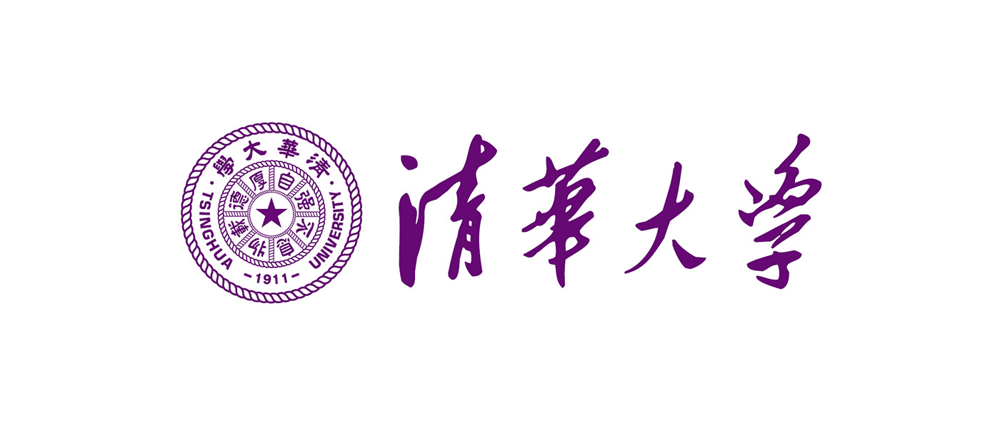
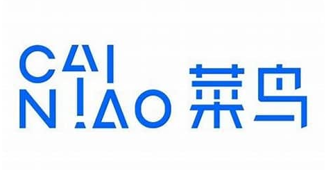

Z
Zhou Ziyi
B.Sc. in Statistics | Data Analysis & Visualization | Applied Machine Learning
Education
School of Economics and Statistics, Guangzhou University
Bachelor of Science in Statistics
Sep 2022 – Jun 2026 (Expected)
- GPA: 3.64/4.0 (Top 10%) | Core Courses: Mathematical Analysis, Advanced Algebra, Probability & Statistics, Data Mining, Statistical Computing, Regression Analysis, Time Series Analysis
- Honors: First-Class Scholarship, Second-Class Scholarship, Outstanding Student, Outstanding Student Leader, Outstanding Volunteer (20+ awards from university).
Projects & Internships

DataPi, School of Software, Tsinghua University
Content & Translation Contributor
Apr 2025 – Present
- Translated and authored technical articles on cutting-edge AI topics; independently produced the Chinese version of “Understanding Transformers with Visualizations,” which garnered 2,000+ views and 400+ shares—among the most widely read pieces in the team.
- Published multiple translated blogs including “Layer-by-Layer Transformer Breakdown,” “AI Agents at Five Difficulty Levels,” and “Multi-Armed Bandits: A Primer for Reinforcement Learning,” deepening my understanding of data science while promoting knowledge sharing in the Chinese-speaking community.
- Used clear explanations and visual aids to demystify complex models, lowering barriers to entry for learners and practitioners.

Cainiao Network (Alibaba Group) – Cross-border Consolidation Channel
Operations Trainee
Jan 2026 – Mar 2026
- Participated in Cainiao’s cross-border e-commerce logistics online practice program under Alibaba ecosystem, systematically studying international logistics workflows and digital operations logic.
- Completed tasks including user behavior analysis, competitive strategy research, and new media content planning, applying statistical thinking to real-world business scenarios.
- Used Excel for basic data cleaning and visualization, combined with user personas to propose optimization suggestions, deepening understanding of “data-driven decision making.”
Zhongyan Technology Co., Ltd. (Wenjuan Wang / Questionnaire Network)
Data Analysis Assistant
Jul 2025 – Sep 2025
- Participated in writing the official SPSSPRO textbook, completing end-to-end projects on customer behavior analysis, credit rating, and user profiling—from data cleaning and feature engineering to modeling and visual reporting.
- Implemented multivariate statistical analyses on the SPSSPRO platform, including PCA, K-Means clustering, regression, and Apriori association rule mining.
- Applied descriptive statistics, PCA, clustering, and discriminant analysis to deliver actionable insights, strengthening my ability to close the loop from statistical theory to business impact.
Foshan Ancestral Temple Museum – Planning & Promotion Dept.
Data Analysis & Research Assistant
Nov 2024 – Apr 2025
- Contributed to the Foshan Social Science Federation project “Revitalizing Foshan’s Cultural Economy through the Leung Shi (Lion Dance) IP,” aiming to boost cultural-tourism integration via intangible cultural heritage.
- Supported end-to-end public perception research—including survey design, field distribution (800+ responses), and expert interviews.
- Performed data cleaning, visualization, and statistical modeling in Python, R, and SPSS using clustering, logistic regression, and factor analysis to uncover audience awareness, preferences, and engagement willingness toward Foshan Lion Dance culture.
- Co-authored the report “Lion Spirit Ignites Heritage, Intangible Culture Forges New Paths: Inheritance and Diversified Promotion of Foshan Ancestral Temple Lion Dance,” proposing data-backed strategies for segmented outreach and youth-oriented promotion, informing the museum’s communication strategy.
Campus Involvement
Youth Volunteer Association, School of Economics and Statistics
Deputy Head of Publicity
Sep 2023 – Jul 2024
- Led integrated publicity campaigns for campus and community service initiatives, reaching over 10,000 beneficiaries through online and offline channels.
- Managed the official WeChat account and designed promotional materials (posters, videos, articles), publishing 20+ posts that significantly boosted event participation and institutional visibility.
Class Statistics 222 (Innovation Track)
Organizing & Publicity Officer
Sep 2023 – Present
- Organized 10+ themed group activities and grassroots leadership programs (“Qian Qian Project”), strengthening class cohesion and ideological engagement.
- Ran the class WeChat official account—handling content planning, typesetting, and publishing—delivering 20+ original posts as the primary channel for class communication and showcase.
Competitions
- MCM/ICM (Mathematical Contest in Modeling) Honorable Mention (International) May 2025
- Zhengda Cup National Market Research Competition National First Prize May 2025
- National Business Elite Challenge (Culture & MICE Track) National First Prize Nov 2025
- China Undergraduate Mathematical Contest in Modeling Provincial Second Prize (Guangdong) Dec 2024
- National Statistical Modeling Competition Provincial Second Prize (Guangdong) Jul 2024
- Blue Bridge Cup (Software & IT Talent Competition) Provincial Third Prize (Guangdong) Apr 2024
Technical Skills
Python
R
Matlab
SQL
SPSS
Excel
PowerPoint
Xmind
EndNote
LaTeX
Markdown
Origin
ArcGIS